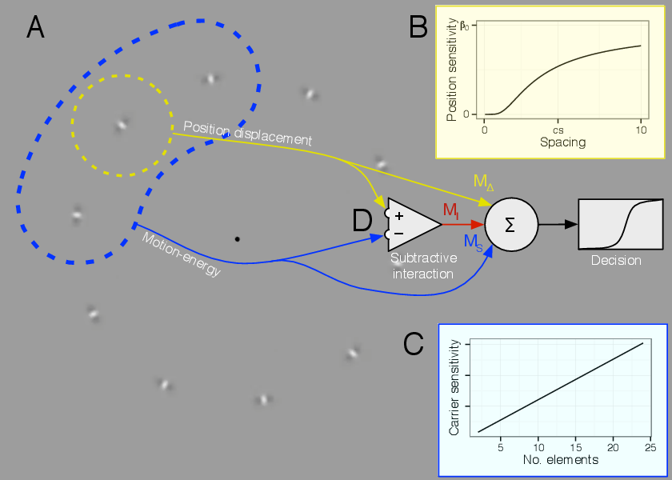
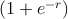

A schematic explanation of our model is shown in Figure 4.1. The model combines two signals to produce decisions about motion direction (Figure 1.1A): MΔ is an estimate of the change of position of a tracked target, corresponding to envelope motion in these stimuli, and is computed within a restricted region illustrated as the smaller, yellow dotted circle. The sensitivity to changes in position is a function of the spacing between elements (Figure 1.1B). MS is a sum of first order motion energy (carrier motion in these stimuli) inside a larger region illustrated by the blue dashed outline. The sensitivity to first order motion depends on the number of elements falling within the region (Figure 1.1C). These two signals are compared by subtraction, producing a difference signal MI (Figure 1.1D), then all signals are combined to produce a decision. The carrier motion input to the subtraction is normalized (it does not depend on the number of elements).
For MS, we begin by assuming that the strength of the first order motion signal is linear with respect to carrier strength C. However, as spacing decreases and there are more elements within the summation region, we expect signals from multiple elements to sum, so that the local motion signal is proportionate to the direction content of individual elements. A model parameter βS determines each observer’s sensitivity to the first order component:
| Ms = βSCN |

For MΔ, assume that envelope motion is computed by taking the difference between successive noisy estimates of the position of a given element. The sensitivity to envelope motion βΔ will then be inversely proportional to the uncertainty in element position. As flanking elements come closer to the tracked element, the visual system will be less able to isolate a single element to determine its position, so the sensitivity to changes in position will decline. We model this by making the sensitivity βΔ(S) a sigmoid function of the spacing between elements:
This function results in sensitivity that approaches β0 at large spacings and approaches zero at
small spacings, as plotted in Figure 4.1B. β0 is the model parameter controlling sensitivity to
envelope displacement for isolated, uncrowded targets; the parameter SC describes the distance
over which spatial interference between targets takes place. SC has a natural interpretation as the
spacing at which the threshold for discriminating a feature (in this case envelope motion) increases
by a constant factor, which is often used as an empirical definition of the “critical distance” of
crowding
(Levi et al., 2002; Pelli and Tillman, 2008; Whitney and Levi, 2011).
These two forms for MS and MΔcapture the phenomenon that decreasing the spacing between elements has opposite effects on the first-order and position-defined motion mechanisms. For the carrier motion signal, cramming more elements into the summation region increases the strength of the signal, since it is a simple summation of motion energy within that region. For the envelope motion signal, cramming more elements into the summation region makes it difficult to estimate the position of any individual element, and thereby weakens the signal. Thus, decreasing the spacing results in carrier motion having a stronger influence on the perceived motion, and envelope motion having a weaker influence.
One addition to this basic model is required to account for a repulsion effect I observed when carrier motion velocity disagrees with envelope velocity. In Figure 1.1A, it might appear to some observers that the carrier motion leftward with a stationary envelope results in perceived motion rightward, and vice versa. I account for this by adding a comparison between carrier and envelope velocity, which generates a third component in the model MI. Since carrier motion has a high temporal frequency for the stimuli I use, its effective speed is high, so I let this depend on the carrier strength per element only. It has a linear term controlled by a coefficient βIaand a second-order, nonlinear term controlled by βIb:
The nonlinear component was necessary to account for a nonmonotonic effect of carrier strength on observers’ responses (see § 5.4.6.)
These three components contribute to the modeled subjects’ responses according to a probabilistic rule;
where logit-1(r) =  -1 is the standard logistic cumulative distribution function. The free parameters of the model are β0, SC, βS, βIa, βIb, and k. The bias term k accounts for an overall clockwise or counterclockwise bias, which some observers exhibit. The lapse rate λ is intended to improve the robustness of the fit (Wichmann and Hill, 2001); I constrained λ to lie between 0 and 0.05.